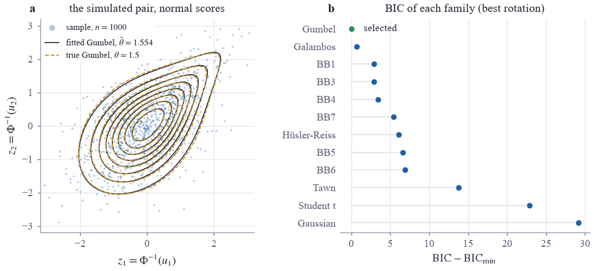
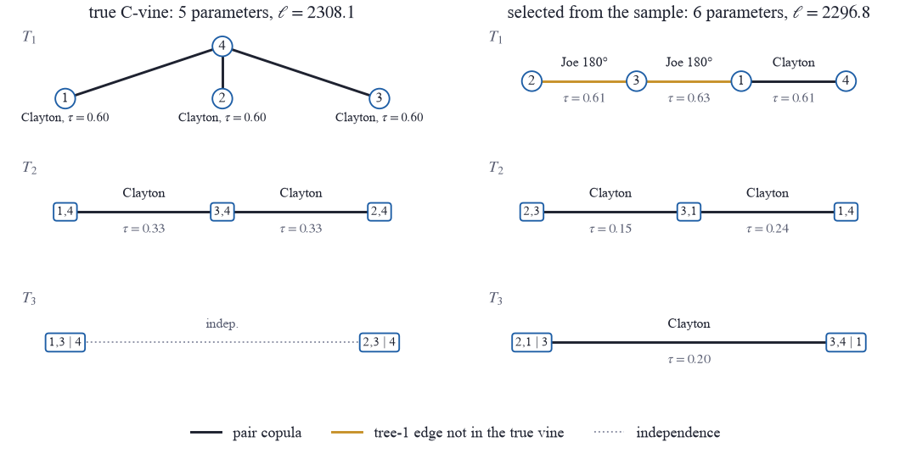

Quick start¶
This page takes about five minutes. It assumes the library is built
(bash build.sh, see Installation), or the Python or
R package installed, and walks through one complete program: a pair copula that
is evaluated, simulated, fitted and selected, followed by a four-dimensional vine that is
selected from data, scored and simulated. Pick a language in the tabs; the choice applies to
every code example on the site.
Everything goes through one module, fortvine_api, and two derived types:
fv_bicop, a bivariate (pair) copula:family,rotation,par(3),loglik;fv_vinecop, a vine copula: structure, onefv_bicop-like edge per tree and position.
The Python package wraps them as the classes Bicop and Vinecop; the R package as the
model objects bicop_dist and vinecop_dist with functions in the style of rvinecopulib
(dbicop, hbicop, bicop, vinecop, ...).
Data are copula data: numbers in \((0, 1)\), one column per variable, typically
pseudo-observations (scaled ranks) of the raw data. fv_pseudo_obs_nd(x, u) turns raw
data x(n, d) into u(n, d) (fv.to_pseudo_obs(x) in Python, pseudo_obs(x) in R).
The program¶
program quickstart
use fortvine_api
implicit none
integer, parameter :: dp = kind(1.0d0), n = 1000
type(fv_bicop) :: cop, est, best
type(fv_vinecop) :: truth, vc
real(dp) :: u1(n), w(n), u2(n), c(3), h(3)
real(dp), allocatable :: u(:, :), sim(:, :)
integer :: ns, k
! ---- one pair copula: Gumbel with theta = 1.5 (Kendall tau = 1 - 1/theta = 1/3)
cop%family = FV_GUMBEL
cop%par(1) = 1.5_dp
call cop%pdf([0.1_dp, 0.5_dp, 0.95_dp], [0.1_dp, 0.5_dp, 0.95_dp], c)
call cop%hfunc1([0.1_dp, 0.5_dp, 0.95_dp], [0.1_dp, 0.5_dp, 0.95_dp], h)
print '(a,3f9.4)', 'density c(u,u) :', c
print '(a,3f9.4)', 'h1(u | u) :', h
! simulate n pairs: u2 = h1^-1(w | u1) with independent uniforms u1, w
call random_seed(size=ns)
call random_seed(put=[(42 + k, k = 1, ns)])
call random_number(u1); call random_number(w)
call cop%hinv1(u1, w, u2)
print '(a,f8.4)', 'sample Kendall tau:', fv_kendall_tau(u1, u2)
! maximum likelihood for a known family, then family selection by BIC
est%family = FV_GUMBEL
call est%fit(u1, u2)
print '(a,f8.4,a,f9.3)', 'Gumbel MLE theta :', est%par(1), ' loglik', est%loglik
call best%select(u1, u2)
print '(3a,i0,a,2f8.4)', 'BIC selection : ', trim(fv_fam_name(best%family)), ', rotation ', &
best%rotation, ', par', best%par(1:2)
! ---- a 4-dimensional vine: a C-vine with Clayton pairs as the truth
allocate(u(n, 4), sim(5, 4))
call truth%set_cvine([1, 2, 3, 4])
truth%fam(1:3, 1) = FV_CLAYTON; truth%par(1, 1:3, 1) = 3.0_dp ! tree 1
truth%fam(1:2, 2) = FV_CLAYTON; truth%par(1, 1:2, 2) = 1.0_dp ! tree 2
call truth%simulate(n, u, seed=1)
call vc%select(u) ! structure, families, parameters
call vc%print()
print '(a,f10.2,a,f10.2,a,i0)', 'loglik', vc%loglik(u), ' (truth', truth%loglik(u), ') parameters ', vc%npars()
call vc%simulate(5, sim, seed=2)
print '(a)', 'five draws from the fitted vine:'
print '(4f9.4)', (sim(k, :), k = 1, 5)
end program quickstart
import numpy as np
import fortvine as fv
n = 1000
# ---- one pair copula: Gumbel with theta = 1.5 (Kendall tau = 1 - 1/theta = 1/3)
cop = fv.Bicop("gumbel", parameters=[1.5])
g = np.array([0.1, 0.5, 0.95])
print("density c(u,u) :", cop.pdf(np.column_stack([g, g])).round(4))
print("h1(u | u) :", cop.hfunc1(np.column_stack([g, g])).round(4))
u12 = cop.simulate(n, seed=42) # u2 = h1^-1(w | u1)
print("sample Kendall tau: %.4f" % fv.kendall_tau(u12[:, 0], u12[:, 1]))
est = fv.Bicop("gumbel").fit(u12) # maximum likelihood, fixed family
print("Gumbel MLE theta : %.4f loglik %.3f" % (est.parameters[0], est.loglik()))
best = fv.Bicop().select(u12) # family and rotation by BIC
print("BIC selection :", best)
# ---- a 4-dimensional vine: a C-vine with Clayton pairs as the truth
truth = fv.Vinecop().set_cvine([1, 2, 3, 4])
truth.fam[0, :3] = 3; truth.par[0, :3, 0] = 3.0 # tree 1: Clayton(3)
truth.fam[1, :2] = 3; truth.par[1, :2, 0] = 1.0 # tree 2: Clayton(1)
u = truth.simulate(n, seed=1)
vc = fv.Vinecop.from_data(u) # structure, families, parameters
print(vc)
print("loglik %.2f (truth %.2f) parameters %d" % (vc.loglik(u), truth.loglik(u), vc.npars))
print("five draws from the fitted vine:")
print(vc.simulate(5, seed=2).round(4))
library(fortvine)
n <- 1000
# ---- one pair copula: Gumbel with theta = 1.5 (Kendall tau = 1 - 1/theta = 1/3)
cop <- bicop_dist("gumbel", 0, 1.5)
g <- c(0.1, 0.5, 0.95)
cat("density c(u,u) :", sprintf("%9.4f", dbicop(cbind(g, g), cop)), "\n", sep = "")
cat("h1(u | u) :", sprintf("%9.4f", hbicop(cbind(g, g), 1, cop)), "\n", sep = "")
set.seed(42)
u12 <- rbicop(n, cop) # u2 = h1^-1(w | u1)
cat(sprintf("sample Kendall tau: %.4f\n", cor(u12[, 1], u12[, 2], method = "kendall")))
est <- bicop(u12, family_set = "gumbel", rotation = 0) # maximum likelihood, fixed family
cat(sprintf("Gumbel MLE theta : %.4f loglik %.3f\n", est$parameters, est$loglik))
best <- bicop(u12, family_set = "all", selcrit = "bic") # family and rotation by BIC
best
# ---- a 4-dimensional vine: a C-vine with Clayton pairs as the truth
pcs <- list(rep(list(bicop_dist("clayton", 0, 3)), 3), # tree 1: Clayton(3)
rep(list(bicop_dist("clayton", 0, 1)), 2)) # tree 2: Clayton(1)
truth <- vinecop_dist(pcs, cvine_structure(1:4))
set.seed(1)
u <- rvinecop(n, truth)
vc <- vinecop(u) # structure, families, parameters
vc
cat(sprintf("loglik %.2f (truth %.2f) parameters %d\n",
sum(log(dvinecop(u, vc))), sum(log(dvinecop(u, truth))), vc$npars))
cat("five draws from the fitted vine:\n")
set.seed(2)
round(rvinecop(5, vc), 4)
The Fortran program is compiled and run like any program that uses the library:
gfortran -O3 -fopenmp -I build quickstart.f90 build/libfortvine.a -o quickstart # add -static on Windows
./quickstart
The scripts run with python quickstart.py and Rscript quickstart.R.
The output¶
density c(u,u) : 1.8518 1.2196 4.5946
h1(u | u) : 0.2052 0.5282 0.7701
sample Kendall tau: 0.3605
Gumbel MLE theta : 1.5364 loglik 186.561
BIC selection : galambos, rotation 0, par 0.8169 0.0000
fortvine vine copula: d = 4, trunc = 3
order: 2 3 1 4
tree 1 edge 1: joe rot 180 par 4.1927E+00 0.0000E+00 0.0000E+00
tree 1 edge 2: clayton rot 0 par 3.3147E+00 0.0000E+00 0.0000E+00
tree 1 edge 3: clayton rot 0 par 3.0554E+00 0.0000E+00 0.0000E+00
tree 2 edge 1: joe rot 180 par 1.2404E+00 0.0000E+00 0.0000E+00
tree 2 edge 2: clayton rot 0 par 6.5971E-01 0.0000E+00 0.0000E+00
tree 3 edge 1: clayton rot 0 par 4.8147E-01 0.0000E+00 0.0000E+00
loglik 2329.56 (truth 2341.55) parameters 6
five draws from the fitted vine:
0.4691 0.7424 0.3725 0.4168
0.2537 0.1718 0.2484 0.4077
0.8929 0.8723 0.7952 0.7623
0.7087 0.8942 0.6184 0.5634
0.9910 0.3277 0.6266 0.2526
density c(u,u) : [1.8518 1.2196 4.5946]
h1(u | u) : [0.2052 0.5282 0.7701]
sample Kendall tau: 0.3683
Gumbel MLE theta : 1.5544 loglik 202.420
BIC selection : Bicop(family='gumbel', rotation=0, parameters=[1.55436957060358])
fortvine vine copula: d = 4, trunc = 3
order: 2 3 1 4
tree 1 edge 1: joe rot 180 par 3.9498
tree 1 edge 2: joe rot 180 par 4.1778
tree 1 edge 3: clayton rot 0 par 3.1232
tree 2 edge 1: clayton rot 0 par 0.3395
tree 2 edge 2: clayton rot 0 par 0.6397
tree 3 edge 1: clayton rot 0 par 0.5037
loglik 2296.80 (truth 2308.14) parameters 6
five draws from the fitted vine:
[[0.0767 0.0961 0.1321 0.0919]
[0.0701 0.0766 0.0495 0.0551]
[0.1275 0.202 0.1577 0.1501]
[0.6095 0.7533 0.6169 0.6332]
[0.571 0.2968 0.2622 0.1873]]
density c(u,u) : 1.8518 1.2196 4.5946
h1(u | u) : 0.2052 0.5282 0.7701
sample Kendall tau: 0.3225
Gumbel MLE theta : 1.4637 loglik 147.021
Bivariate copula ('bicop_dist'): family = gumbel (4), rotation = 0, parameters = 1.464
Vine copula ('vinecop_dist'): d = 4, trunc_lvl = 3, order = 2 3 1 4
npars = 6, loglik = 2460.13 (n = 1000)
tree edge conditioned conditioning family rotation parameters
1 1 2, 3 joe 180 4.034
1 2 3, 1 joe 180 4.149
1 3 1, 4 joe 180 3.878
2 1 2, 1 3 joe 180 1.183
2 2 3, 4 1 clayton 0 0.6081
3 1 2, 4 3, 1 clayton 0 0.5673
loglik 2460.13 (truth 2457.28) parameters 6
five draws from the fitted vine:
[,1] [,2] [,3] [,4]
[1,] 0.5822 0.9702 0.7077 0.8535
[2,] 0.9080 0.6337 0.7635 0.9764
[3,] 0.2744 0.5037 0.3733 0.2258
[4,] 0.3182 0.3388 0.2763 0.4448
[5,] 0.2027 0.0952 0.1070 0.0750
The density and h-function values agree to every printed digit in the three languages: they come from the same compiled routines. Everything after them depends on the simulated sample, and Fortran, NumPy and R draw different uniforms, so those lines differ. The numbers quoted below are those of the Fortran run.
What happened¶
Evaluating. A copula is defined by setting family (a code such as FV_GUMBEL, see
Family codes and constants) and the parameters par(1:3); unused
slots stay 0. All evaluation methods are vectorised: pdf, logpdf, cdf, hfunc1,
hfunc2, hinv1, hinv2 take two arrays of equal length and fill a third (in Python and
R they take an \(n \times 2\) array and return a vector). The density of the Gumbel copula
grows towards \((1, 1)\) (4.59 at \(u = v = 0.95\)) because the family has upper tail
dependence.
Simulating. hinv1(u1, w, u2) inverts the conditional distribution
\(h_1(v \mid u) = \partial C(u, v) / \partial u\) in \(v\). Feeding it independent uniforms
\((u_1, w)\) yields a sample from the copula: this inverse Rosenblatt construction is how
every simulation in fortvine works, including Bicop.simulate and rbicop. The sample's
Kendall tau (0.36) is close to the theoretical \(1 - 1/\theta = 1/3\).
Fitting. fit maximises the likelihood of the family already stored in
est%family (and est%rotation), here giving \(\hat\theta = 1.536\). The maximum
log-likelihood is stored in est%loglik. In R, bicop() fits a single family when it is
given one family and a rotation.
Selecting. select fits every family of the candidate set in every admissible
rotation and keeps the one with the best criterion (BIC by default). On the Fortran sample
it picked the Galambos copula rather than Gumbel (the Python and R samples give Gumbel):
both are extreme-value copulas with nearly identical Pickands functions, and from 1000
observations the two cannot be told apart, so the choice between them is close to a coin
flip. That is normal behaviour, not an error; the candidate set and criterion are
configured with an fv_controls argument (keyword arguments in
Python and R).

A vine. set_cvine and set_dvine create a fixed C- or D-vine structure whose edge
families and parameters are then filled in by hand (fam(edge, tree),
par(1:3, edge, tree); in Python fam[tree, edge]); simulate draws from it.
vc%select(u) runs the whole Dissmann et al. (2013) procedure on the
sample: it chooses the tree structure with maximum spanning trees on \(|\tau|\), then a
family, rotation and parameters for every edge, tree by tree. The selected vine is not the
true one edge for edge (survival Joe and Clayton have similar lower tails, and the third
tree absorbs a small amount of dependence that the second tree's choice left over), but its
log-likelihood (2329.6) is within 12 units of the truth's (2341.6), using six parameters
where the truth has five.

print lists every edge, loglik and npars give what an information criterion needs,
and simulate(m, out, seed=) draws new observations reproducibly.
Where to go next¶
- Concepts: the theory behind h-functions, rotations, vines and the Rosenblatt transform.
- Examples: fully explained programs, including tail dependence, weighted and discrete data, and calling the library from Python and C.
- Pair copulas and Vine copulas in the manual; the API reference lists every argument.
- The Python package and the R package: installation and the full list of functions of the bindings.